Green
Essentials.
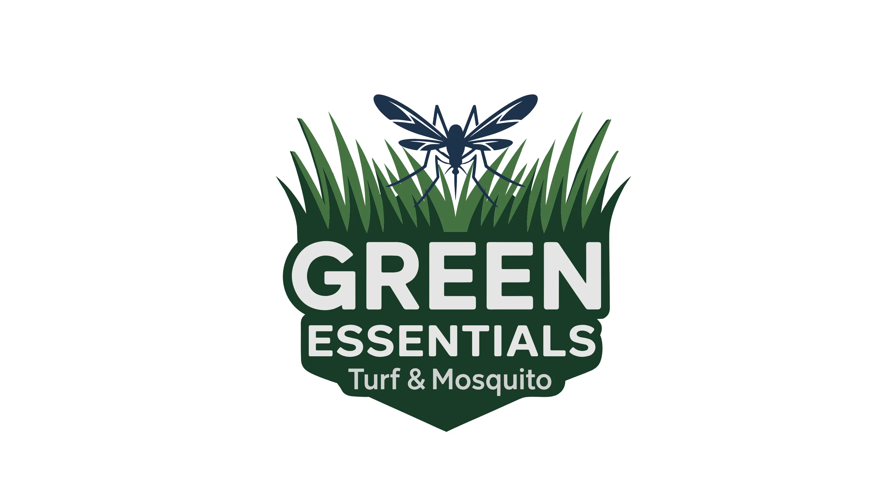
01. Executive Summary
Lush Control.
Green Essentials is a specialized pest control and lawn care service. I engineered a masculine and results-driven identity that highlights their dual expertise in lawn fertilization and mosquito control treatments. The resulting system effectively targets homeowners looking for a lush, green, weed-free lawn and a mosquito-free outdoor space.
02. Context
Situational Awareness
Professional turf management requires a balance of aesthetic appeal and technical efficiency. Green Essentials serves a target audience that views their yard as a premium investment, requiring a brand that reflects high-performance care for both their grass and their environment.
03. The Core Problem
Problem Definition
The challenge was to develop a single mark that could represent two distinct but related services: Lawn Treatments and Mosquito Control. The identity needed to appear "masculine" and authoritative, promising a safe and pristine outdoor experience through technical expertise.
04. Constraints
Risk & Trade-offs
The brand system had to be highly visible on trucks and equipment in outdoor environments. We utilized a palette of blues and greens to signal both growth and pest-free clarity, while ensuring the logo remained bold and legible on diverse fleet textures.
05. Objectives
Success Criteria
Establish a "Masculine & Results-Driven" brand presence. Success was defined by clear customer recognition of the dual service offering and a documented increase in inquiries from homeowners seeking integrated turf and mosquito management solutions.
06. Strategy & Thinking
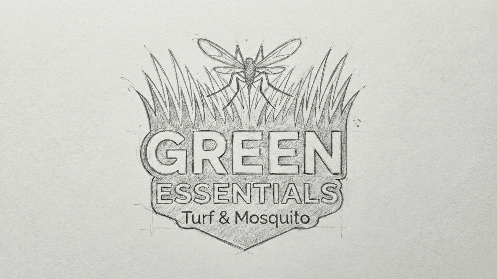
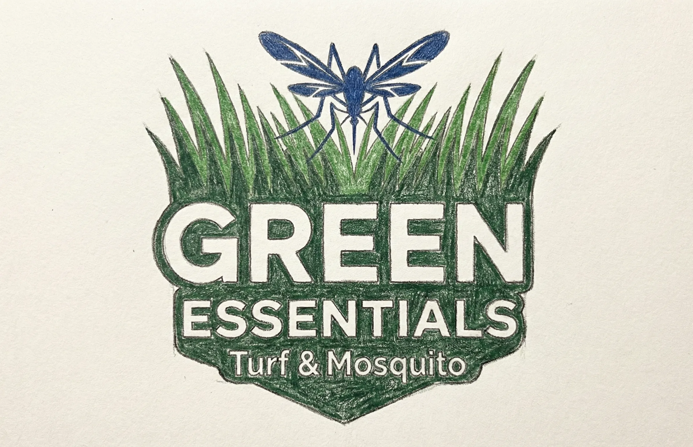
07. Design Decisions
Technical Protection.
A bold, sans-serif typeface was paired with a clinical color palette of blues and greens to emphasize biological safety and growth. The logo incorporates elements that represent both healthy turf and pest control, ensuring immediate recognition of the brand's core value proposition in a crowded environmental market.
System Architecture
Brand Kit.
AaBb
Inter Bold (Performance Clarity)
// Fully Custom Typeface: Hand-crafted and digitized directly from original conceptual sketches to ensure a completely unique brand identity.
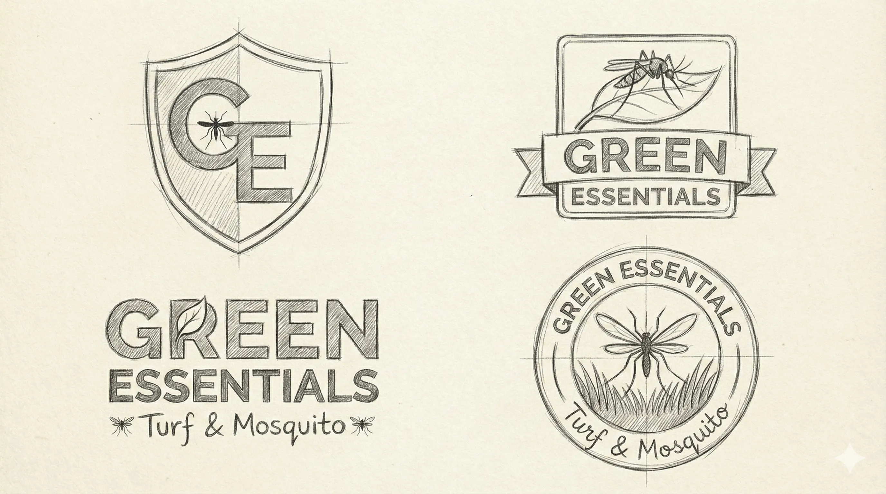
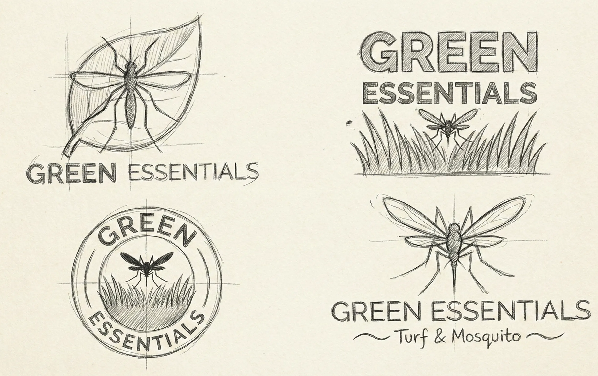
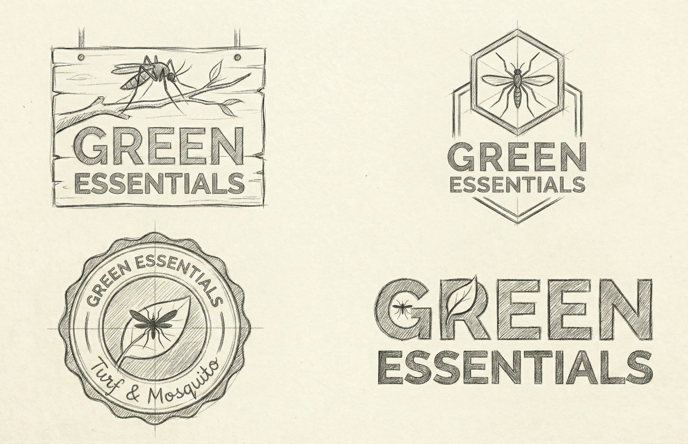
08. Execution & Deliverables
Proof of Completion
Delivered a high-impact fleet branding system, including water-resistant decal specs, uniform designs, and a technical iconography set that clearly distinguishes between turf treatments and mosquito control.
09. Outcome & Impact
Was It Worth It?
The identity successfully positioned Green Essentials as a dual-expertise market leader. The "Masculine & Results-Driven" aesthetic resonated with the target demographic, leading to improved retention for full-service treatment seasonal packages.
10. Reflection & Learning
Maturity Signal
Designing for environmental services requires a visual promise of results. This project taught me how to merge two distinct operational services into a single, cohesive brand message that provides homeowners with a unified sense of outdoor protection.
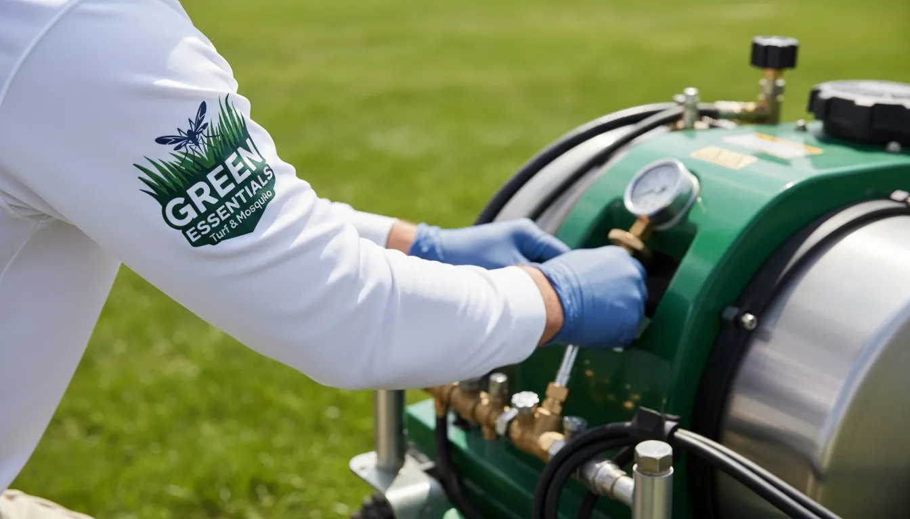
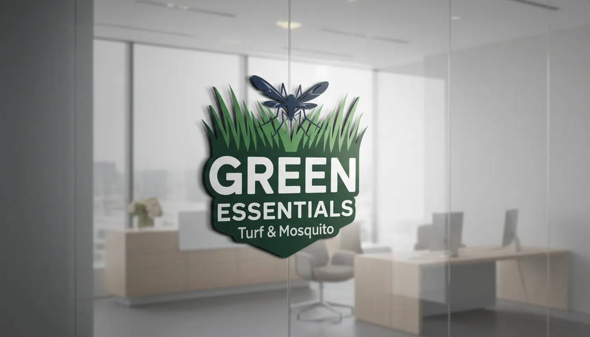
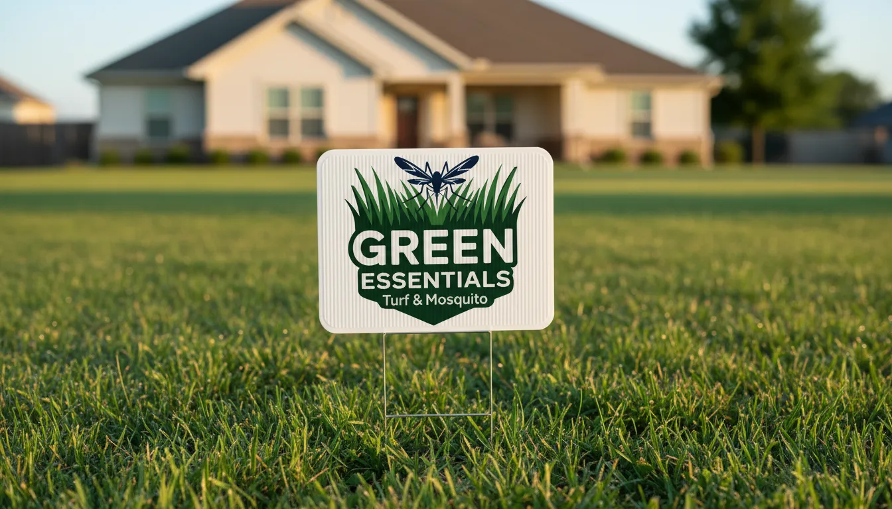
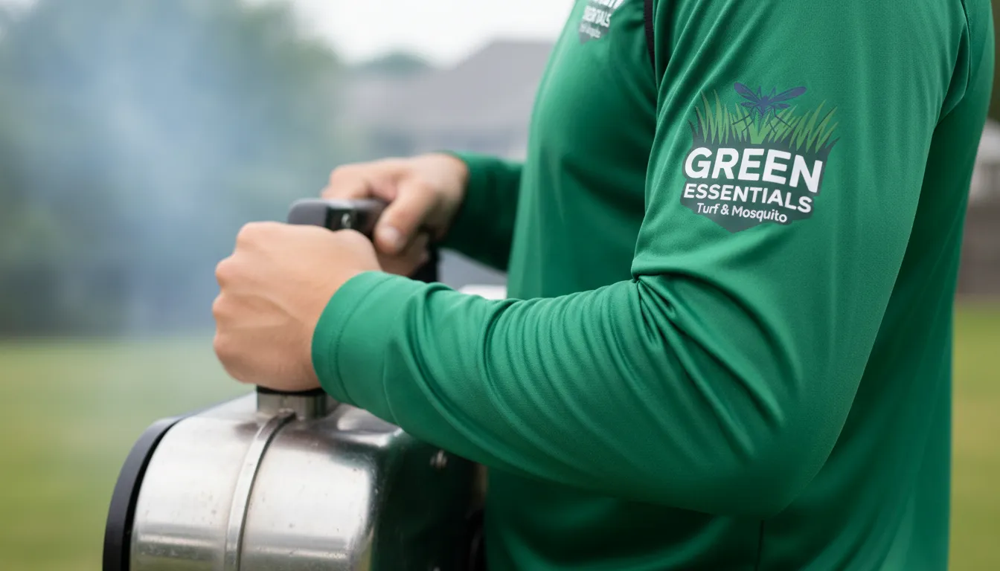
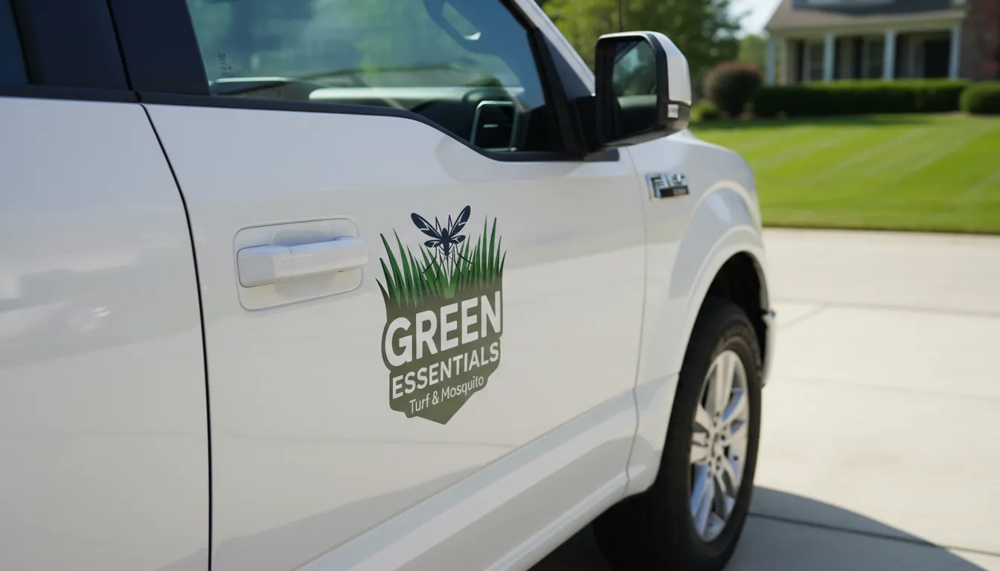
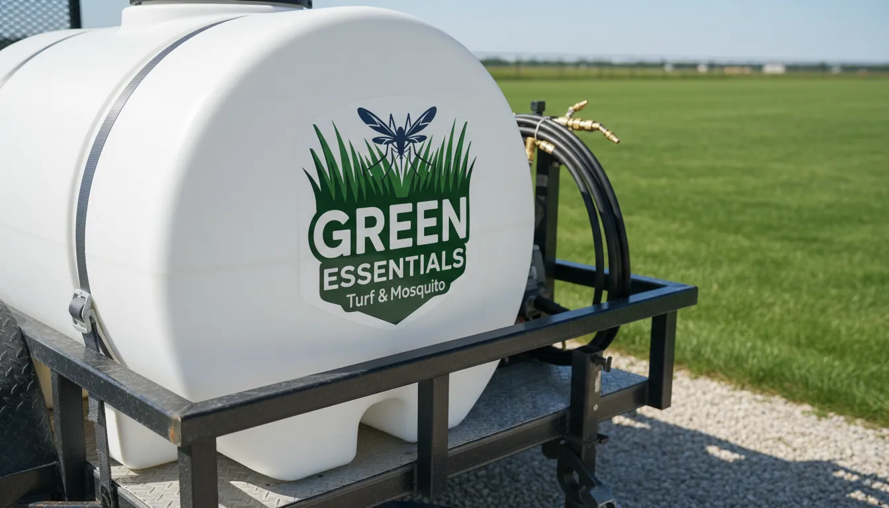
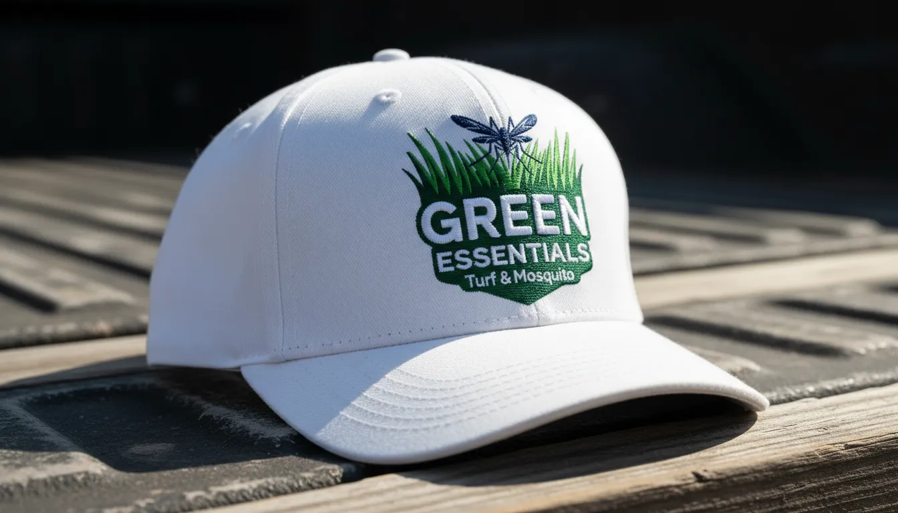
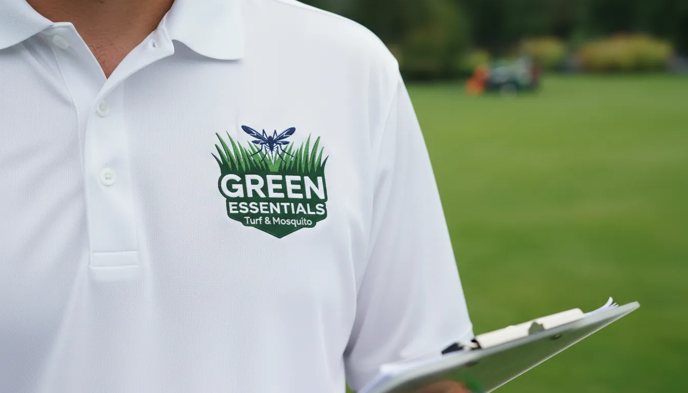
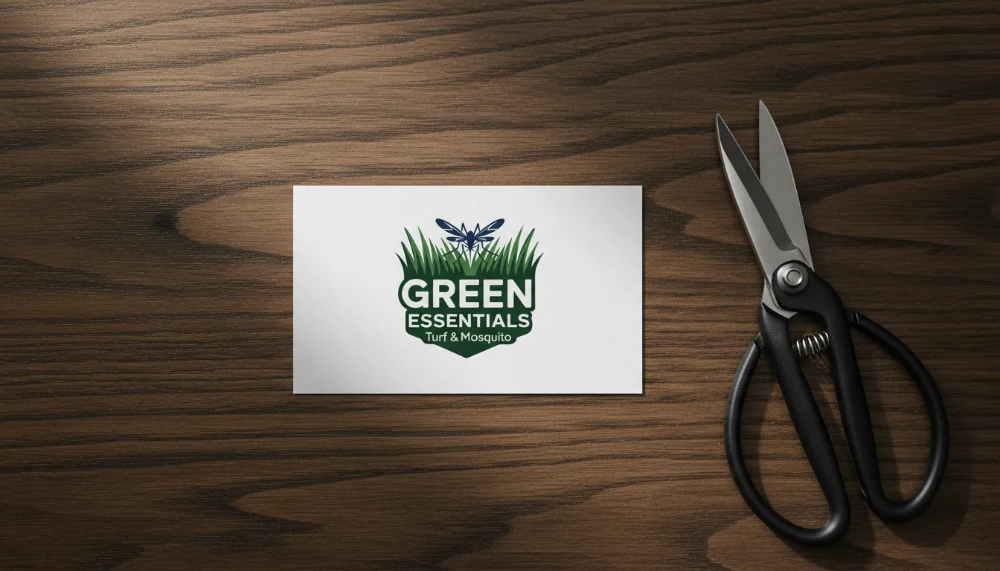